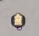
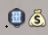
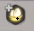
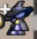
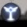

TOOL 03 BETA
伊莫搶蛋地圖辨識
整理地圖線索，朝「上傳遊戲截圖、辨認目前地圖」的功能開發。
Beta 開發中截圖辨識尚未開放。目前正在整理比對資料；已收集的地圖不會在此頁公開展示，也不提供完整地圖下載。
MAP MARKERS
地圖標記圖例
提供新地圖時，可依照圖例描述你看到的線索。

起點傳門
出口傳門／鑰匙商人
蛋
Boss
挑戰一起補完資料
提供新地圖 ↗你有新的地圖嗎？
上傳圖片並填寫你知道的線索，幫助後續辨識功能涵蓋更多地圖。需要登入 GitHub 才能提交；投稿圖片會公開顯示，請先移除不想公開的資訊。收到後會先確認內容，不會自動公開在網站圖庫。